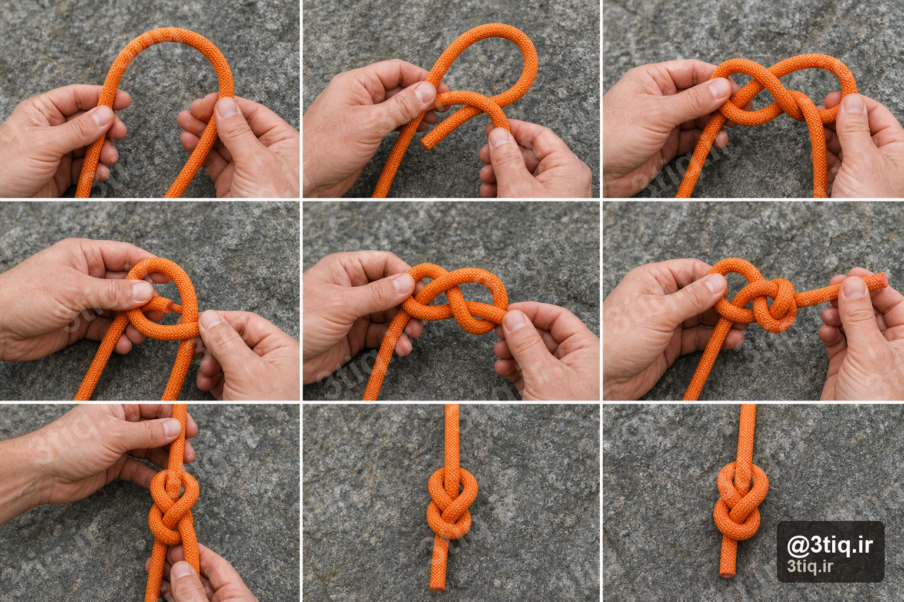
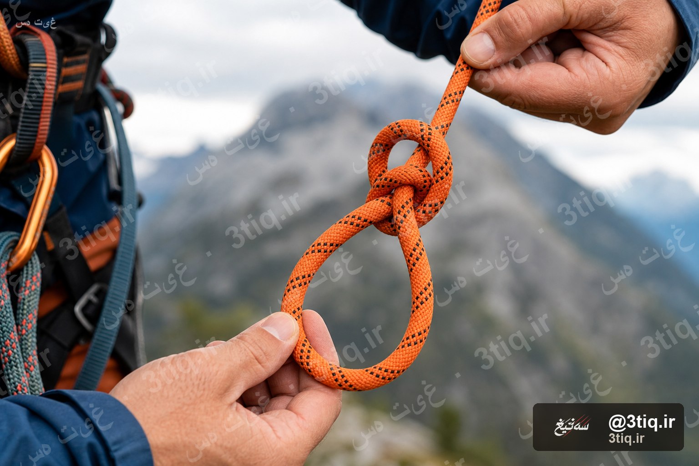
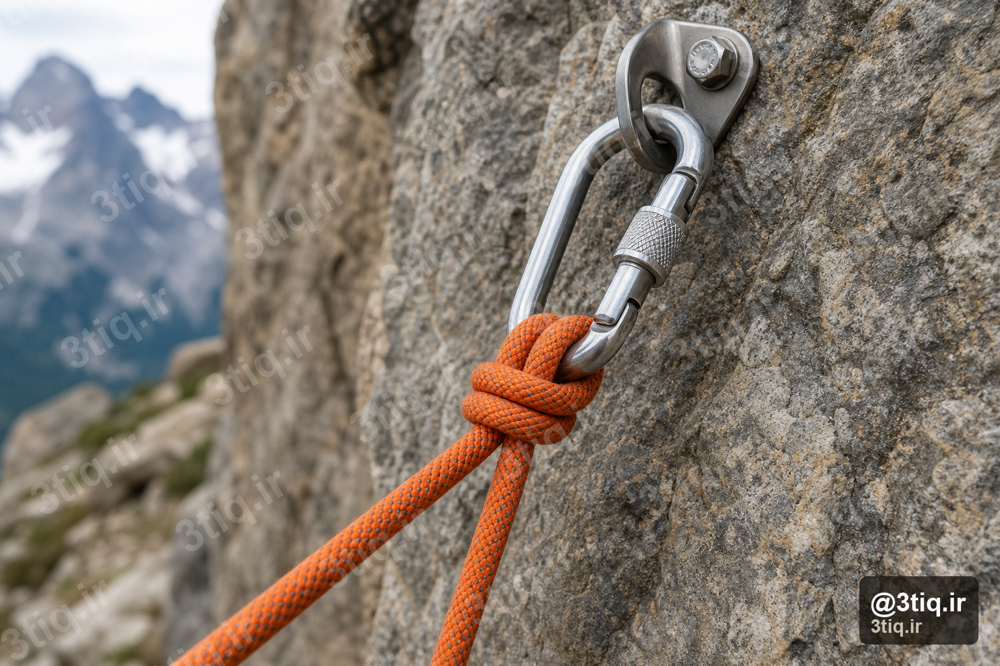
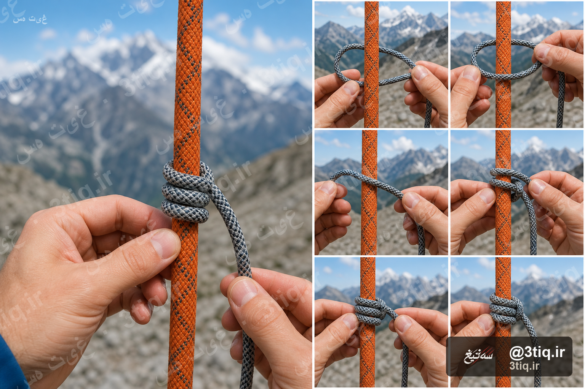
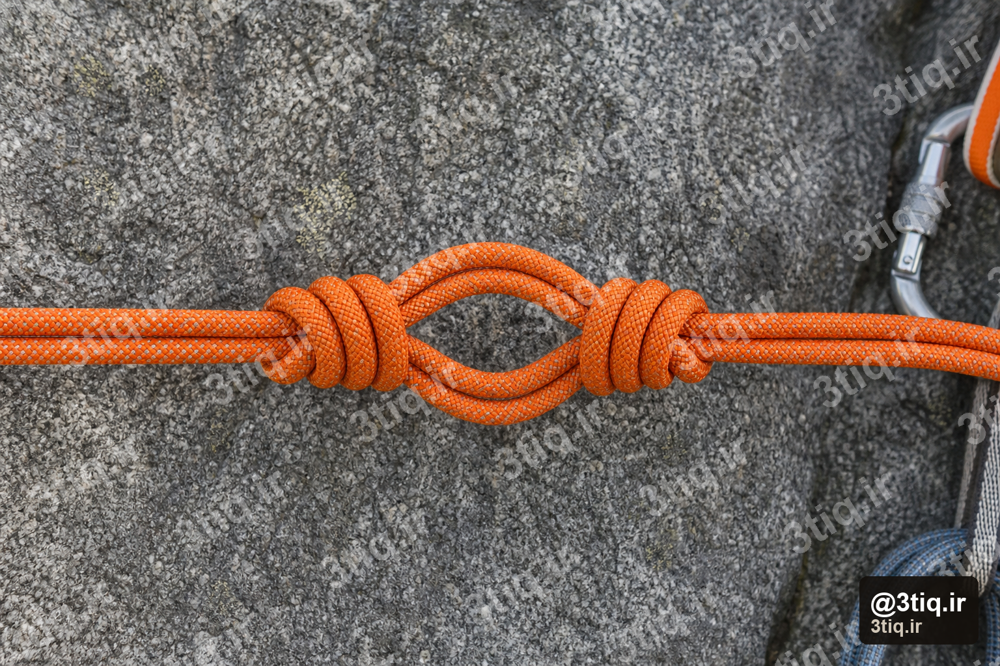
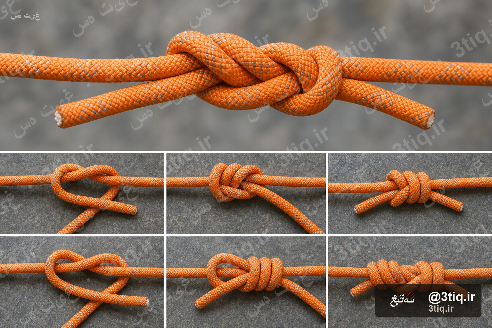
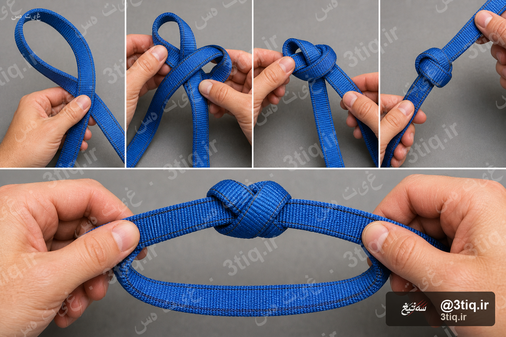
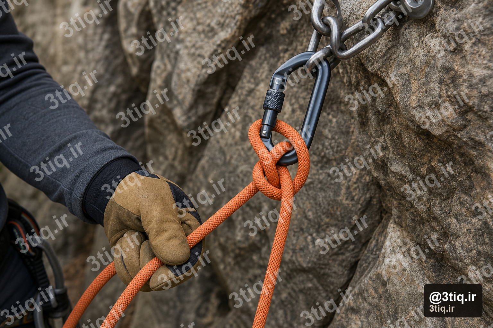

گره درست، تفاوت بین صعود امن و حادثه است. هر کوهنورد — از مبتدی تا حرفهای — باید چند گره پایه را با چشم بسته هم بزند. در این مقاله ۸ گره ضروری را با عکس و مراحل دقیق یاد میگیری.
⚠️ قبل از شروع
گرهها را در خانه با یک طناب کهنه تمرین کن. بعد از هر بستن، گره را از دو طرف بکش و مطمئن شو سفت شده. در کوه، همیشه گره را دوباره چک کن.
۱. گره هشت (Figure-Eight Follow-Through)
کاربرد: اتصال به هارنس — مهمترین گره صخرهنوردی
- حدود ۱ متر از انتهای طناب بگیر و یک گره هشت ساده (شکل عدد ۸) بزن — فاصله حلقهها یکنواخت باشد.
- انتهای آزاد طناب را از حلقههای هارنس (حلقه بند و حلقه کمر) رد کن.
- انتهای آزاد را موازی با قسمت اصلی طناب برگردان و داخل گره هشت دنبال کن — همان مسیر را برعکس طی کن.
- طناب را گره به گره بکش تا سفت شود. حداقل ۱۰ سانتیمتر انتهای آزاد (دم طناب) باقی بماند.
- گره را از پشت و جلو نگاه کن — باید شکل ۸ واضح و مرتب باشد، بدون پیچ یا لاپی.
۲. گره گرگور (Bowline)
کاربرد: حلقه ثابت و قابل اعتماد — اتصال به تخته سنگ یا نجات
- یک حلقه کوچک (به اندازه مشت) در طناب بساز — قسمت اصلی طناب روی حلقه باشد.
- انتهای آزاد طناب را از پشت حلقه بالا بیاور، دور قسمت اصلی طناب بپیچ و دوباره داخل حلقه پایین بفرست.
- هر دو قسمت را همزمان بکش تا گره سفت شود.
- برای امنیت بیشتر، یک گره یدآور (Overhand) روی دم طناب کنار گره گرگور بزن.
💡 نکته
گره گرگور تحت بار سفت میشود ولی بدون بار راحت باز میشود — برای نجات و اتصال سریع عالی است، ولی برای بند زدن به هارنس جای گره هشت را نمیگیرد.
۳. گره باریکوند (Clove Hitch)
کاربرد: اتصال سریع طناب به کارابین در جانپناه
- کارابین را به نقطه اتصال (اسلینگ یا میخ) وصل کن.
- طناب را از پشت به جلو از داخل کارابین رد کن (یک دور).
- طناب را دوباره از جلو به عقب از داخل کارابین رد کن — دو دور روی شاخه کارابین ایجاد میشود.
- انتهای آزاد را زیر آخرین دور بگذار و به سمت بار بکش تا قفل شود.
- طول هر دو دور تقریباً برابر باشد — اگر یک طرف شل باشد، گره ممکن است باز شود.
۴. گره پروسیک (Prusik)
کاربرد: صعود روی طناب، خودگریز و نجات
- یک طناب کمکی (معمولاً ۶ میلیمتر) را به شکل حلقه با گره دوون یا آبکند ببند.
- حلقه را دور طناب اصلی بگذار و گره پروسیک بزن: طناب کمکی را ۳ بار دور طناب اصلی بپیچ.
- هر دور باید مرتب و کنار هم باشد — نه روی هم.
- طرفین حلقه را بکش تا گره سفت شود.
- برای صعود: پروسیک را بالا ببر، وزن را روی آن بگذار (قفل میشود)، پا را بالا ببر، تکرار کن.
۵. گره پروانه / میانبند (Alpine Butterfly)
کاربرد: حلقه میانی روی طناب — برای میانبند یا عبور نقطهای
- طناب را سهبار دور دستت بپیچ تا سه حلقه موازی داشته باشی.
- حلقه بالایی را بگیر، پایین بیاور، از زیر دو حلقه دیگر رد کن و از داخل حلقه میانی بالا بیاور.
- هر سه حلقه را همزمان بکش تا گره شکل پروانه بگیرد.
- حلقه خروجی باید در وسط طناب و عمود بر راستای طناب باشد.
- برای میانبند: کارابین را به حلقه وصل کن و نفر دوم را ببند.
۶. گره ماهیگیر دوتایی (Double Fisherman's)
کاربرد: اتصال دو طناب — رپل و طنابهای کمکی
- دو انتهای طناب را موازی کنار هم بگذار (حدود ۳۰ سانتیمتر همپوشانی).
- انتهای طناب A را ۳ دور دور طناب B بپیچ و از داخل حلقه رد کن (گره ماهیگیر).
- همین کار را با انتهای طناب B دور طناب A تکرار — در جهت مخالف.
- هر دو گره را جداگانه سفت کن، بعد هر دو طناب را بکش تا به هم نزدیک شوند.
- حداقل ۵ سانتیمتر دم طناب بعد از گره باقی بماند.
۷. گره آبکند (Water Knot)
کاربرد: بستن حلقه اسلینگ وبینگ
- وبینگ را تا کن تا دو انتهای آن روی هم قرار بگیرند (حدود ۱۰ سانتیمتر همپوشانی).
- یک گره ساده (Overhand) روی هر دو لایه وبینگ بزن — طوری که هر دو لایه با هم داخل گره باشند.
- گره را آرام و یکنواخت سفت کن — وبینگ نباید چین بخورد.
- طول همپوشانی حداقل ۸ سانتیمتر باشد.
- وبینگهای قدیمی را دور بینداز — گره آبکند با زمان شل میشود.
⚠️ هشدار وبینگ
گره آبکند روی وبینگ تحت بار ممکن است لغزش پیدا کند. اسلینگهای آماده را ترجیح بده و اگر خودت میبندی، هر فصل آن را تست کن.
۸. گره مونتر (Munter Hitch)
کاربرد: بیلینگ اضطراری بدون دستگاه فرود
- کارابین قفلدار را به نقطه اتصال وصل کن و قفل را ببند.
- طناب را از پشت به جلو از داخل کارابین رد کن.
- طناب را به شکل هشت وارونه دور شاخه کارابین بپیچ و دوباره از داخل کارابین رد کن.
- طرف بار (طناب صعودکننده) باید سمت پایین و طرف بیل (دست تو) سمت بالا باشد.
- برای فرود: دست روی شاخه بیل با زاویه کم یا زیاد، سرعت را کنترل کن.
تمرین و چک نهایی
- هر گره را حداقل ۲۰ بار در خانه تمرین کن تا عضلات دست یاد بگیرند.
- قبل از هر صعود، گره هارنس و اتصالات جانپناه را با شریکت چک دوگانه کن.
- طنابهای کهنه را برای تمرین نگه دار — در کوه از طناب تازه استفاده کن.
- گرههای مرطوب یا یخزده سختتر باز میشوند — در زمستان دقت بیشتری لازم است.
✅ چکلیست قبل از صعود
- گره هارنس = هشت بستهشونده با ۱۰+ سانتیمتر دم طناب
- کارابینها قفل هستند
- اتصالات جانپناه با باریکوند یا اسلینگ سفت
- شریکت گرههای تو را دید و تأیید کرد
سؤال درباره گرهها یا تجهیزات داری؟ از دستیار کوهنوردی سه تیغ بپرس — یا مقاله چکلیست قبل از صعود را هم بخوان.